어디에 두나?
여러 파일로 된 프로젝트를 한곳에 모아 두고, 다른 컴퓨터나 다른 사람도 같은 것을 볼 수 있어야 해요.
오전에는 업무에서 늘 하던 "파일 버전 관리"가 GitHub에서 어떻게 이어지는지 이해하고, 계정을 만든 뒤 GitHub 웹 화면에서 기본 동작을 직접 해요. 오후에는 1인 바이브코더처럼 Claude에게 말로 시켜 파일을 올리고·내리고·합치는 흐름과 협업 사례를 보고, 만든 페이지를 GitHub Pages로 공개해요. 마지막으로 제품을 만드는 순서(폭포수·애자일·스크럼)와 PM 기초 용어를 정리해요.
my-first-site(커밋 기록·병합한 PR) + GitHub Pages 공개 주소 https://내아이디.github.io/my-first-site/| 시간 | 09:00–18:00 (점심 12:00–13:00, 수업 8시간) |
|---|---|
| 교과 | GitHub 및 프로젝트 방법론(1) |
| 교육 목표 | GitHub로 문서의 버전을 기록하는 방법을 익히고, 성공적인 팀 프로젝트 수행을 위한 애자일(Agile) 철학과 디자인 씽킹 방법론을 습득한다. |
| 진행 방식 | GitHub 기본 동작과 배포 실습은 각자 해요. 협업 실습은 선택이에요. |
| 주요 내용 | ① 업무 속 파일 버전 관리와 GitHub의 연결, Git·GitHub의 역사 ② 계정 만들기·2단계 인증(선택) ③ GitHub 웹에서 기본 동작 6가지 ④ 원격과 로컬, Claude로 올리고·내리고·합치기 ⑤ 협업 사례와 1인 바이브코딩 사례 ⑥ GitHub Pages로 공개 배포 ⑦ 제품 개발 프로세스, 폭포수와 애자일, 스크럼 ⑧ 디자인 씽킹과 PM 기초 용어 |
| 수업이 끝나면 | ① 업무의 파일 버전 관리와 GitHub의 커밋·브랜치·PR을 연결해 설명한다 ② my-first-site에 파일을 올리고, 고치고, 내려받고, 과거 버전과 비교하고, 되돌린다 ③ 원격·로컬·푸시·풀의 뜻을 말하고, Claude에게 프롬프트로 올리기·PR·병합을 시킨다 ④ 내 페이지를 GitHub Pages 주소로 공개한다 ⑤ 폭포수와 애자일, 스크럼의 역할·이벤트·산출물, PM 기초 용어를 설명한다 |
버튼을 누르기 전에 "무엇을 왜 하는지"부터 잡아요. 이 개념이 잡혀 있으면 AI에게 일을 시킬 때도, 개발자와 대화할 때도 같은 말로 이야기할 수 있어요. 오늘은 코드를 한 줄도 쓰지 않고 웹 화면만으로 GitHub를 써요.
버전 관리는 파일이 바뀌어 온 과정을 기록해 두고, 필요할 때 예전 상태를 찾거나 되돌리는 일이에요. 개발자만의 일이 아니에요. 기획서·보고서·디자인 시안·엑셀을 다루는 사람이라면 누구나 이미 매일 버전 관리를 하고 있어요. 다만 대부분 "파일 이름"으로만 하고 있을 뿐이에요.
| 업무 장면 | 이럴 때 생기는 문제 |
|---|---|
폴더에 기획서_최종.docx, 기획서_최종_진짜최종.docx, 기획서_최종_수정2.docx가 쌓여 있어요. | 어느 것이 진짜 마지막인지, 무엇이 바뀌었는지 아무도 몰라요. |
| 팀장님께 메일로 보냈더니 수정본이 회신으로 오고, 다른 동료도 따로 고쳐서 보냈어요. | 두 수정본을 손으로 합치다가 한쪽 수정이 빠져요. |
| 공유 드라이브의 엑셀을 두 사람이 동시에 고쳤어요. | 나중에 저장한 사람이 앞사람의 수정을 덮어써요. |
| 클라이언트가 승인한 시안과 지금 작업 중인 시안이 같은 폴더에 있어요. | 승인 안 된 버전을 실수로 보내요. |
| "지난주 화요일 버전으로 돌려 주세요"라는 요청이 왔어요. | 그날 저장한 파일이 남아 있지 않거나, 어느 것인지 찾을 수 없어요. |
업무에서 파일 버전을 잘 관리하는 대표 팁
| 팁 | 이렇게 해요 |
|---|---|
| 1. 파일 이름 규칙 정하기 | 날짜_문서명_v번호_작성자처럼 순서를 정해 팀이 함께 써요. 예: 20261028_특가기획서_v03_김수정.docx |
| 2. "최종"이라고 쓰지 않기 | "최종"은 한 번 더 고치는 순간 거짓이 돼요. 대신 날짜와 버전 번호를 붙여요. |
| 3. 번호를 건너뛰지 않기 | v01 → v02 → v03처럼 하나씩 올려요. 번호만 봐도 순서가 보여요. |
| 4. 바꾼 내용을 한 줄로 남기기 | 버전마다 "무엇을, 왜, 누구 요청으로" 바꿨는지 변경 이력표나 메모에 한 줄씩 적어요. 되돌릴 때 판단이 쉬워져요. |
| 5. 원본은 두고 사본으로 작업하기 | 크게 고치기 전에는 사본을 먼저 만들어요. 덮어쓰기 사고를 막는 가장 쉬운 습관이에요. |
| 6. 승인본·전달본은 따로 두고 고치지 않기 | 클라이언트에게 보낸 버전, 결재받은 버전은 별도 폴더에 두고 손대지 않아요. |
| 7. 도구의 "버전 기록" 기능 쓰기 | 구글 문서·시트, 마이크로소프트 365 같은 클라우드 문서는 자동으로 버전 기록이 남아요. 중요한 시점에는 버전에 이름을 붙여 두세요. |
| 8. 규칙은 단순하게, 팀과 합의하기 | 규칙이 복잡하면 아무도 안 지켜요. 지킬 수 있는 한두 가지부터 팀이 함께 정해요. |
더 읽어 보기
위의 팁들은 GitHub에서 대부분 기능으로 이미 들어 있어요. 파일 이름에 번호를 붙이지 않아도, GitHub가 저장할 때마다 기록을 남겨 줘요.
| 업무에서 하던 일 | GitHub에서는 | 오늘 해 보는 곳 |
|---|---|---|
| 팀이 함께 쓰는 공유 폴더 | 저장소(Repository): 프로젝트 파일과 변경 기록을 모아 두는 곳 | 3-1 |
| v01, v02… 버전 번호와 날짜 | 커밋(Commit): 저장할 때마다 누가·언제 바꿨는지 자동으로 남는 기록 | 3-2 |
| 변경 이력표의 한 줄 메모 | 커밋 메시지: 커밋마다 "무엇을 왜 바꿨는지" 적는 한 줄 | 3-2 |
| "지난주 버전으로 돌려 주세요" | 과거 보기·되돌리기: 커밋 기록에서 예전 상태를 보고 되돌림 | 3-5, 3-6 |
| 원본은 두고 사본으로 작업하기 | 브랜치(Branch): 원본(main)은 그대로 두고 따로 고치는 갈래 | 3-8 |
| "검토 부탁드립니다" 메일과 회신 | 풀 리퀘스트(PR): 바꾼 내용을 원본에 합쳐 달라는 요청. 검토 의견이 PR에 모여요. | 3-8, 세션 4 |
| 승인본을 따로 보관하기 | 병합(Merge)과 릴리스(Release): 검토가 끝난 내용만 main에 합치고, 중요한 시점에 버전 이름표를 달아요. | 3-8 |
AI로 만든 결과물은 대부분 파일이에요. 파일을 한곳에 올려 두면 어느 컴퓨터에서든, 어떤 AI 도구로든 이어서 고칠 수 있고, 그대로 웹사이트로 공개할 수도 있어요(세션 5).
실제 서비스는 파일 하나로 끝나지 않아요. 웹페이지 한 장만 해도 HTML, CSS, 자바스크립트, 이미지 파일이 함께 움직이고, AI에게 "로그인 기능 붙여 줘"라고 한 번 말하면 여러 파일이 한꺼번에 바뀌어요. 문서도 마찬가지예요. "최종", "최종_진짜", "최종_수정2" 파일이 쌓이면 어느 것이 맞는지 아무도 몰라요.
여러 파일로 된 프로젝트를 한곳에 모아 두고, 다른 컴퓨터나 다른 사람도 같은 것을 볼 수 있어야 해요.
AI가 고친 뒤 화면이 깨졌을 때, "어제 잘 되던 상태"로 돌아갈 수 있어야 해요.
나, 동료, 개발자, AI가 함께 고칠 때 누가 언제 무엇을 왜 바꿨는지 남아야 해요.
이 세 질문에 답하는 도구가 Git과 GitHub예요. 한 문장으로 말하면 GitHub는 파일을 온라인 보관함(저장소)에 올려 두고, 누가 언제 무엇을 바꿨는지 기록을 남기며 함께 일하는 서비스예요.
둘은 이름이 비슷해서 자주 섞어 부르지만, 역할이 달라요. 공식 홈페이지는 Git (git-scm.com), GitHub (github.com), GitHub Docs (한국어)예요.
파일의 변경 기록을 남기는 버전 관리 도구예요. 내 컴퓨터 안에서 동작하고, 인터넷이 없어도 쓸 수 있어요. 2005년 리눅스 개발자 리누스 토르발스가 만들었어요.
Git으로 관리하는 프로젝트를 인터넷에 올려 두고 함께 일하는 서비스예요. 보관, 공유, 리뷰, 이슈 관리, 배포까지 협업 기능을 더해 줘요.
비유하면 Git은 문서 프로그램의 "버전 기록" 기능, GitHub는 그 문서를 올려 두고 팀이 함께 댓글 달고 승인하는 공유 드라이브예요. 오늘은 설치 없이 GitHub 웹 화면만으로 Git의 핵심 동작을 해 봐요.
GitHub는 누가 만들고, 누가 샀고, 지금 어떻게 바뀌고 있나요?
| 시기 | 일 | 출처 |
|---|---|---|
| 2005년 | 리눅스 개발 공동체(특히 리누스 토르발스)가 쓰던 버전 관리 도구의 무료 사용이 끊기면서 Git을 직접 만들었어요. Git은 지금도 무료 오픈소스예요(2026년 9월 28일 2.56.0 공개). | Pro Git: A Short History of Git · git-scm.com |
| 2008년 4월 10일 | 톰 프레스턴-워너, 크리스 완스트래스, P. J. 하이엇, 스콧 샤콘이 만든 GitHub가 정식으로 문을 열었어요. Git 저장소를 인터넷에 두고 함께 일하는 서비스예요. | GitHub Blog: We launched · Wikipedia: GitHub |
| 2018년 6월 4일 발표 2018년 10월 26일 완료 | 마이크로소프트가 GitHub를 75억 달러(마이크로소프트 주식)로 인수했어요. 당시 "GitHub는 독립적으로 운영된다"고 밝혔어요. | Microsoft News: Microsoft to acquire GitHub for $7.5 billion |
| 2025년 8월 11일 | 토마스 돔케 CEO가 물러난다고 발표했어요. 마이크로소프트는 새 CEO를 따로 두지 않고, GitHub를 마이크로소프트의 AI 조직(CoreAI) 구조 아래에서 여러 임원이 나눠 맡게 했어요. | Axios: GitHub CEO to step down |
| 2025년 10월 28일 | 연례 보고서 Octoverse: GitHub를 쓰는 개발자가 1억 8천만 명을 넘었고, 1년 동안 3,600만 명 넘게 새로 가입했어요("1초에 한 명"). | GitHub Blog: Octoverse 2025 |
| 2026년 10월 현재 | GitHub 소개 페이지 기준 개발자 2억 2,500만 명 이상, 저장소 8억 개 이상. 첫 화면은 "개발자, 에이전트(AI), 코드가 한 플랫폼에서 함께 일한다"고 소개해요. | github.com/about · github.com |
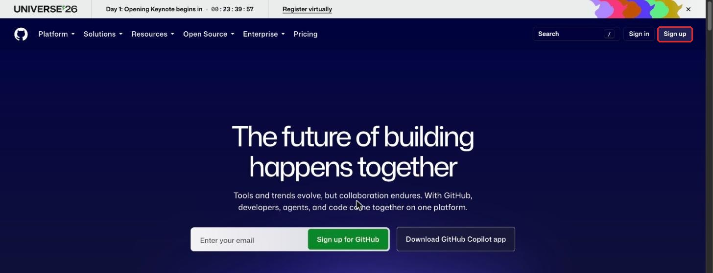
리누스 토르발스(Linus Torvalds)는 개발자라면 대부분 이름을 아는 사람이에요. 그가 시작한 두 프로젝트가 지금 개발 세계의 기본 도구가 됐기 때문이에요.
| 만든 것 | 지금 어디에 쓰이나 | 출처 |
|---|---|---|
| 리눅스(Linux) 1991년 발표 | 2017년 세계에서 가장 빠른 슈퍼컴퓨터 500대(TOP500)가 모두 리눅스로 돌았어요. 안드로이드 스마트폰도 리눅스를 바탕으로 만들어졌어요. | Wikipedia: History of Linux |
| Git 2005년 | 리눅스를 함께 만들던 사람들이 쓰던 유료 버전 관리 도구(BitKeeper)의 무료 사용이 끊기자, 리누스를 중심으로 직접 만든 도구예요. 오늘 배우는 GitHub가 바로 이 Git 위에 서 있어요. | Pro Git: A Short History of Git |
재밌는 이야기: 1991년 8월 25일, 리누스는 개발자 게시판에 리눅스를 처음 소개하면서 이렇게 썼어요. "(무료) 운영체제를 만들고 있어요. 그냥 취미예요. GNU처럼 크고 전문적인 건 아닐 거예요." 세계의 서버와 스마트폰을 움직이게 된 프로젝트가 "취미"로 시작한 셈이에요. 또 Git의 공식 소개 문서(README)에는 리누스가 첫 버전을 만들 때 Git을 "멍청한 내용 추적기(the stupid content tracker)"라고 불렀다고 적혀 있어요.
출처: Wikipedia: History of Linux(1991년 발표 문장) · git/git README("the stupid content tracker"), 2026-10-28 확인
PM에게 주는 의미: 큰 도구는 "내가 매일 겪는 불편"에서 시작하는 경우가 많아요. Git도 리누스 팀이 자기 일을 계속하려고 만든 도구였어요.
GitHub 로고와 화면 곳곳에 나오는 고양이 머리에 문어 다리를 단 캐릭터가 옥토캣(Octocat)이에요. 이름도 "문어(Octopus) + 고양이(Cat)"예요. GitHub를 상징하는 캐릭터예요.
출처: Wikipedia: Simon Oxley · Cameron McEfee: The Octocat, 2026-10-28 확인
PM에게 주는 의미: 브랜드 자산이 꼭 처음부터 직접 만든 것일 필요는 없어요. 다만 나중에 핵심 자산이 될 것 같다면 GitHub처럼 사용 권리를 일찍 확보해 두는 게 중요해요(DAY 2 저작권 이야기와 연결돼요).
| 이유 | GitHub 없이 | GitHub로 | 오늘 해 보는 곳 |
|---|---|---|---|
| ① 버전 기록과 되돌리기 | "index_최종_진짜최종.html"을 계속 만들고, 망가지면 어느 파일이 마지막으로 잘 되던 것인지 모름 | 저장할 때마다 메모가 붙은 기록(커밋)이 쌓이고, 언제든 그 시점으로 돌아갈 수 있음 | 3-5, 3-6 |
| ② 변경 기록 | "이거 누가 바꿨어요?"를 메신저로 묻고 다님 | 누가, 언제, 어떤 줄을, 왜 바꿨는지 자동으로 남음 | 4-2 |
| ③ 협업 | 파일을 메일로 주고받다가 서로의 수정이 덮어써짐 | 각자 갈래(브랜치)에서 작업하고, 검토(리뷰)를 거쳐 합침(병합) | 세션 6(선택) |
| ④ 배포 연결 | 완성 파일을 서버에 따로 올리는 작업이 매번 필요 | 저장소의 특정 갈래가 바뀌면 웹사이트가 자동으로 갱신되게 연결할 수 있음 | 세션 5 |
특히 AI와 함께 만드는 사람에게 ①이 가장 중요해요. AI는 빠르게 많이 고치는 대신, 가끔 잘 되던 부분까지 함께 바꿔 버려요. AI에게 큰 작업을 시키기 전에 커밋을 남기는 습관이 있으면, 망가져도 몇 번의 클릭이나 한 문장으로 돌아올 수 있어요.
| 장면 | GitHub로 하는 일 | 오늘 해 보는 곳 |
|---|---|---|
| 요구사항이 자주 바뀔 때 | 요구사항 문서를 고칠 때마다 커밋으로 기록하고, 이전 버전과 비교해요. | 3-3 README 고치기 |
| 개발자·AI의 작업을 확인할 때 | 커밋 기록과 PR에서 무엇이 바뀌었는지 보고, 줄 댓글·이슈·리뷰로 의견을 남겨요. | 세션 4 |
| 결과물을 보여 줄 때 | 저장소 주소나, 저장소로 만든 웹페이지 주소를 공유해요. | 세션 5 GitHub Pages |
my-first-site는 오늘 세션 5에서 GitHub Pages로 인터넷에 공개하고, 앞으로 만드는 결과물도 계속 올려요. 이름을 꼭 똑같이 만들어 주세요.오늘 나오는 GitHub 용어는 아래가 전부예요. 지금 다 외우지 않아도, 실습하면서 다시 돌아와 확인하면 돼요.
프로젝트 파일과 그 변경 기록을 모아 두는 폴더.
변경 내용을 메모와 함께 기록하는 것. 커밋한 시점으로 언제든 돌아갈 수 있어요.
원본을 건드리지 않고 따로 작업하는 갈래. 기본 갈래 이름은 main이에요.
원격은 GitHub에 있는 저장소, 로컬은 내 컴퓨터(또는 AI 작업 공간)에 있는 복사본이에요.
푸시는 로컬 → 원격으로 올리기, 풀은 원격 → 로컬로 최신 받기, 클론은 원격 저장소를 기록째 처음 복사해 오기예요.
"내 브랜치의 변경을 main에 합쳐 주세요"라는 요청. 여기서 검토와 의견이 오가요.
브랜치의 변경을 다른 브랜치에 합치는 것. 같은 줄을 서로 다르게 고쳤으면 충돌(conflict)이 나요.
할 일, 버그, 요청을 적어 두는 게시글. 담당자를 정하고 PR과 연결할 수 있어요.
"이 시점이 v1.0이에요"처럼 특정 커밋에 이름표(태그)를 달아 공개하는 것이에요.
무료 계정을 하나 만들어요. 이 계정은 과정이 끝날 때까지, 그리고 그 뒤 포트폴리오로도 계속 쓰게 돼요.
GitHub의 개인 무료 플랜(GitHub Free)에서는 공개(Public) 저장소를 개수 제한 없이, 모든 기능으로 쓸 수 있어요. 비공개(Private) 저장소도 개수 제한은 없지만 일부 기능이 제한돼요. 이 과정은 무료 플랜으로 진행해요. 결제 정보를 입력할 필요가 없어요.
강사 시연 강사가 먼저 가입 화면을 보여 드린 뒤, 실습 함께 따라 해요.
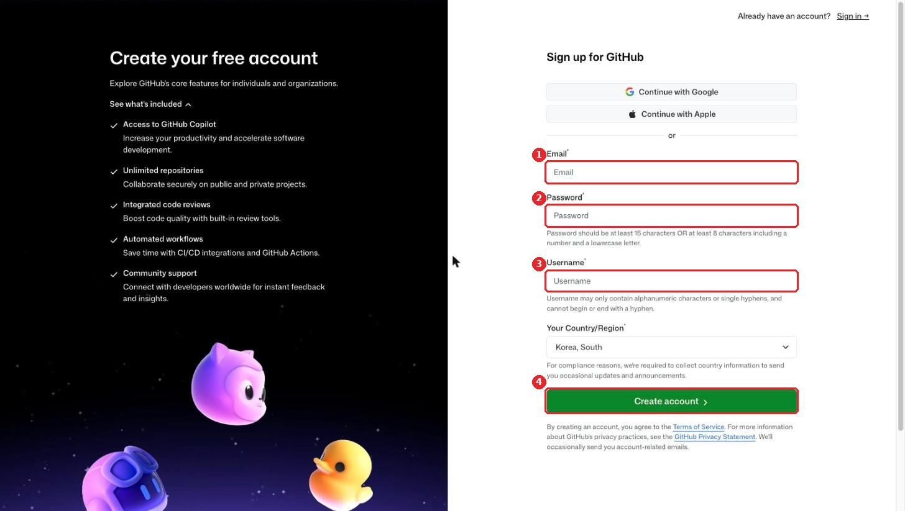
| 사용자 이름 고르는 팁 | 예시 |
|---|---|
| 포트폴리오 주소에 그대로 들어가요. 짧고, 내 이름이나 활동명과 연결되게 정해요. | kim-selectmarket 처럼 영문 소문자와 하이픈(-)으로 |
| 나중에 면접관이 보게 돼요. 장난스러운 이름은 피해요. | ✕ asdf1234 → ○ soojung-pm |
가입한 뒤에는 github.com/login에서 로그인해요.
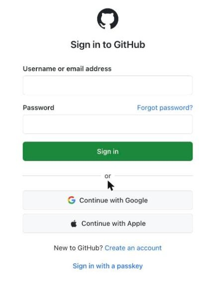
2단계 인증의 첫 준비물은 휴대폰의 인증 앱이에요. 아래 둘 중 하나를 휴대폰 앱 스토어(아이폰은 App Store, 안드로이드는 Google Play)에서 이름으로 검색해 설치해요. 둘 다 무료예요. 이미 쓰는 인증 앱(예: 1Password)이 있으면 그 앱을 써도 돼요.
| 앱 이름 (검색어) | 만든 곳 | 이런 사람에게 |
|---|---|---|
| Google Authenticator | Google 계정을 주로 쓰는 사람. 화면이 단순해요. | |
| Microsoft Authenticator | Microsoft | 회사에서 Microsoft 365(Outlook·Teams)를 쓰는 사람. 이미 깔려 있을 수 있어요. |
2단계 인증(2FA, Two-Factor Authentication)은 비밀번호에 더해 휴대폰 인증 앱의 숫자 같은 두 번째 확인을 거쳐야 로그인되게 하는 방법이에요. 비밀번호가 새어 나가도 내 계정을 지킬 수 있어요. GitHub는 계정을 만든 뒤 2단계 인증 설정을 강하게 권장해요.
| 방법 | 무엇인가 | 처음 설정할 때 쓸 수 있나 |
|---|---|---|
| 인증 앱 (TOTP) · 권장 | Google Authenticator, Microsoft Authenticator 같은 앱으로 GitHub 화면의 QR 코드를 찍으면, 앱에 6자리 숫자가 계속 바뀌며 나와요. 로그인할 때 그 숫자를 넣어요. | 네. GitHub가 첫 번째 방법으로 권장해요. |
| 문자 메시지 (SMS) | 휴대폰 문자로 숫자를 받아요. | 네. 다만 GitHub는 인증 앱을 더 권장해요. |
| GitHub Mobile (GitHub 공식 앱) | 로그인할 때 휴대폰의 GitHub 앱으로 "승인" 알림이 와요. | 아니요. 인증 앱이나 문자 메시지를 먼저 설정한 뒤에 추가로 쓸 수 있어요. |
| 패스키 · 보안 키 | 휴대폰·노트북의 지문·얼굴 인식이나 USB 보안 키로 확인해요. | 아니요. 2단계 인증을 먼저 켠 뒤 추가해요. |
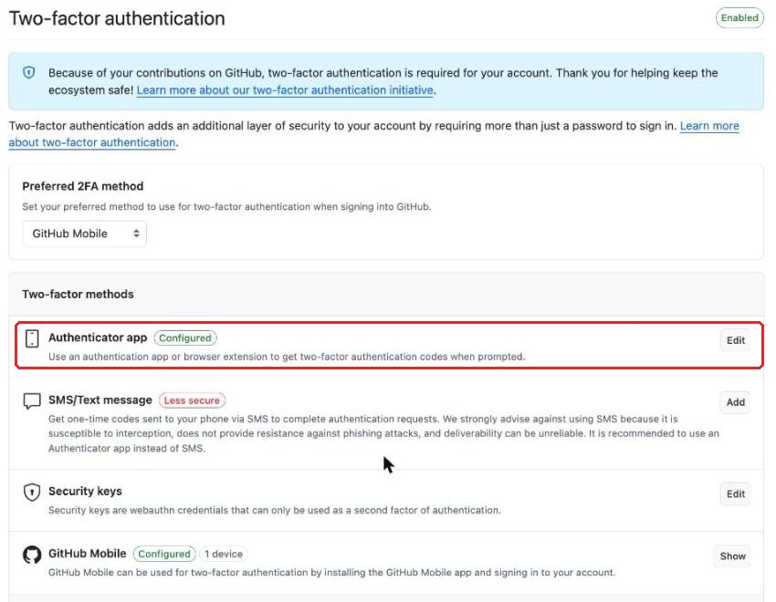
선택 실습 인증 앱으로 설정하는 순서예요. ①에서 설치한 인증 앱을 휴대폰에 열어 두세요.
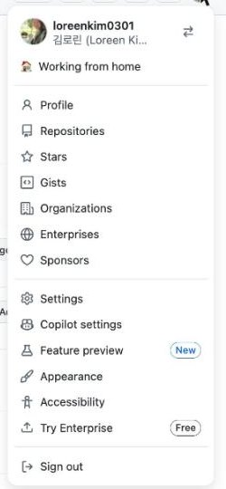
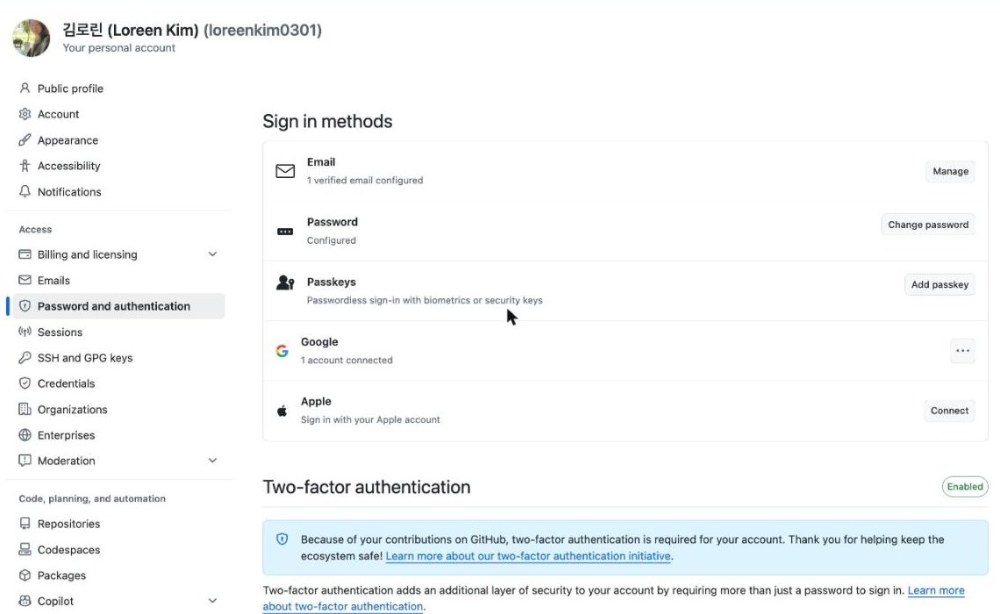
혼자 만드는 사람이 매일 쓰는 동작을 GitHub 웹 화면으로 직접 해 봐요. 만들기 → 올리기 → 고치기 → 내려받기 → 과거 보기 → 되돌리기 순서예요. 여기까지는 GitHub 화면만으로 해요. 그다음 3-7부터는 원격과 로컬을 이해하고 Claude에게 올리고 내리기를 시켜요.
실습 아래 값을 그대로 넣어 주세요.
| 항목 | 입력할 값 | 이유 |
|---|---|---|
| Owner | 내 사용자 이름 | 저장소의 주인이 나라는 뜻이에요. |
| Repository name | my-first-site | 나중에 웹페이지를 공개할 때 이 이름을 기준으로 안내해요. 철자를 똑같이 써 주세요. |
| Description | (선택) AI 프로덕트 매니저 과정 첫 저장소 | 저장소 설명이에요. 비워 둬도 돼요. |
| 공개 범위 | [Public] | 무료 요금제에서 GitHub Pages와 오늘 배우는 기능을 쓰고, 포트폴리오로 보여 주기 위해서예요. |
| README | [Add README] 켜기 | 저장소 소개 파일 README.md가 자동으로 만들어져요. 이 파일을 오늘 고쳐 봐요. |
실습 1. 저장소 만들기
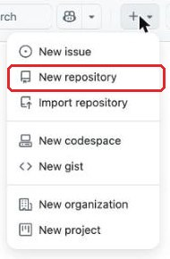
my-first-site를 적어요.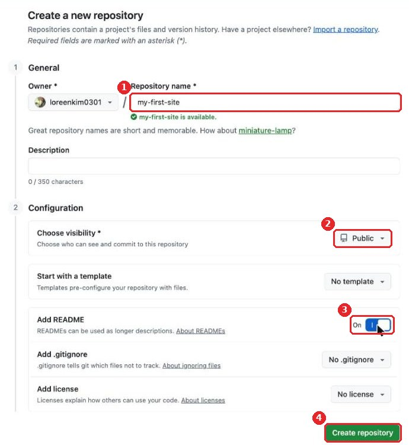
. - _ 만 쓸 수 있어요. 한글이나 띄어쓰기는 쓰지 않아요.README.md 파일 하나가 보이나요?github.com/내아이디/my-first-site 인가요?내 컴퓨터에 있는 파일을 저장소에 올려요. 올리는 순간 "누가, 언제, 어떤 메모로 올렸는지"가 커밋으로 남아요.
실습 2. sale.html 올리기
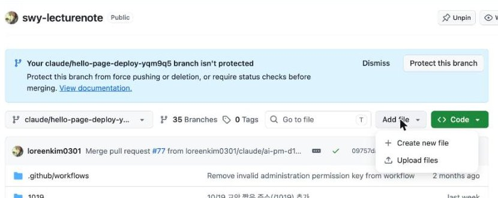
sale.html을 화면에 끌어다 놓거나, [choose your files]를 눌러 골라요.셀렉트마켓 특가 페이지 첫 업로드라고 적어요.main에 바로 커밋하는 선택지를 그대로 두고, 아래 커밋 버튼을 눌러요.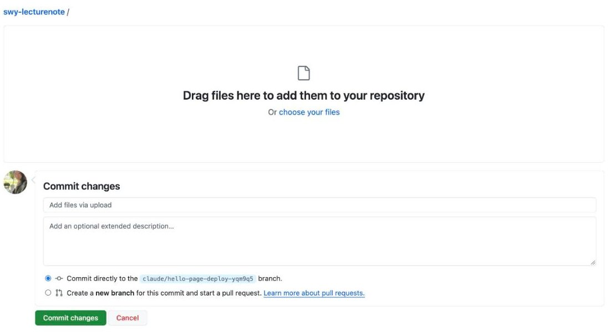
좋은 커밋 메시지는 "무엇을 왜 바꿨는지" 한 줄로 알 수 있어야 해요. 나중에 기록을 다시 볼 사람(미래의 나, 동료, AI)을 위한 메모예요.
| 나쁜 예 | 좋은 예 |
|---|---|
| 수정 | 특가 상품 가격을 10월 4주차 기준으로 변경 |
| update sale.html | 고객센터 운영 시간 문구 추가 (문의 증가 대응) |
| ㅇㅇ | 모바일에서 카드가 겹치던 간격 수정 |
README.md와 sale.html이 함께 보이나요?이 과정의 오늘 실습은 브라우저만 써요. 나중에 AI 코딩 도구를 쓰게 되면 아래처럼 말해요.
요청: 지금까지 바뀐 파일을 커밋하고 GitHub에 올려 줘. 내용: 커밋 전에 바뀐 파일 목록을 먼저 보여 주고, 내가 모르는 파일이 섞여 있으면 멈추고 물어봐. 내가 요청하지 않은 파일은 추가하지 마. 커밋 메시지는 무엇을 왜 바꿨는지 한국어 한 줄로 쓰고, 이유를 모르면 [확인 필요]로 남겨. 형식: 실행한 Git 명령어와 결과, 올라간 커밋 메시지를 순서대로 보여 줘.
작은 수정은 브라우저에서 바로 할 수 있어요. 고친 내용은 모두 새 커밋으로 남아요. 이 칸에서는 네 가지를 차례로 해요. ① 손으로 README 고치기 ② Copilot으로 README 꾸미기 ③ 파일 이름 바꾸기 ④ 파일 지우기.
README.md는 저장소에 들어온 사람이 가장 먼저 보는 소개 글이에요. 이름 끝의 .md는 Markdown(마크다운) 형식이라는 뜻이에요. 마크다운은 간단한 기호로 제목·목록·굵은 글씨를 만드는 글쓰기 방법이에요. GitHub는 .md 파일을 열면 기호 대신 꾸며진 모양으로 보여 줘요.
| 쓰는 법 | 결과 | 주의할 점 |
|---|---|---|
# 큰 제목## 중간 제목 | 제목. #이 많을수록(최대 6개) 작은 제목이에요. | # 뒤에 한 칸 띄우기. 붙여 쓰면 제목이 안 돼요. |
- 항목 | 점 목록 | - 뒤에 한 칸 띄우기 |
**굵게** | 굵게 | 별표 두 개로 앞뒤를 감싸요. |
| 빈 줄 한 줄 | 문단 나누기 | 줄만 바꾸면 한 문단으로 붙어 보일 수 있어요. 문단을 나누려면 빈 줄을 넣어요. |
실습 3. README를 손으로 내 소개로 바꾸기
README.md 를 눌러요.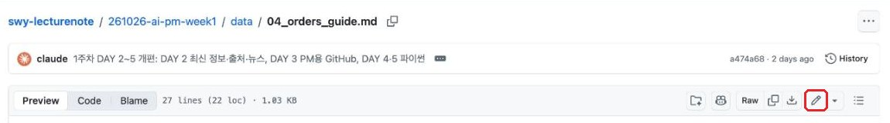
# [불리고 싶은 이름]의 첫 저장소 ## 소개 - 이름: [불리고 싶은 이름] - 과정: **AI 프로덕트 매니저** (2026.10 ~ 2027.04) - 목표: [OT 로드맵의 결과 이미지 한 문장]
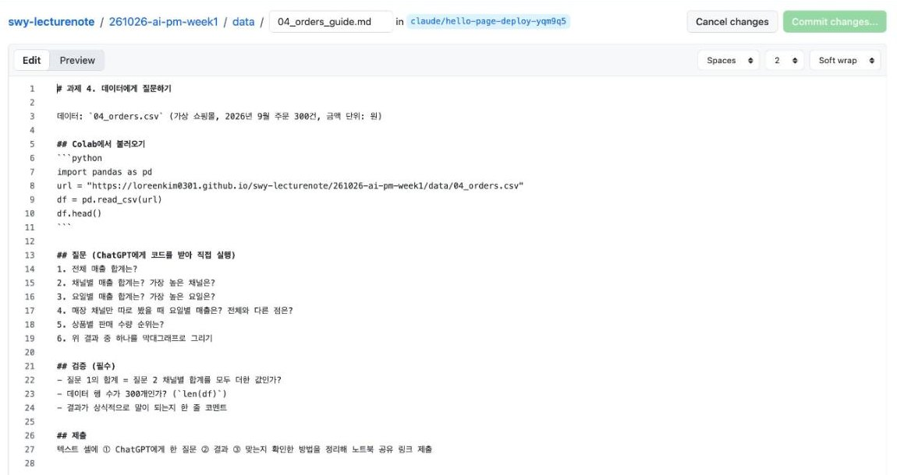
README에 자기소개 추가를 적은 뒤 main에 바로 커밋해요.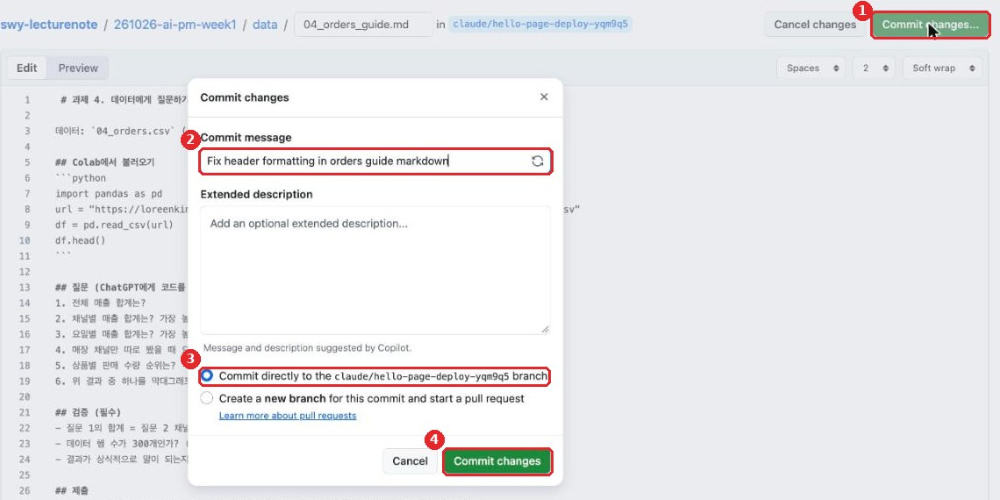
**AI 프로덕트 매니저**가 굵은 글씨로 보이나요?실습 4. Copilot으로 README를 이미지·표·링크로 꾸미기
GitHub에는 AI 도우미 GitHub Copilot이 들어 있어요. 오른쪽 위 Copilot 아이콘이나 github.com/copilot에서 채팅으로 쓸 수 있어요. 강사 계정은 무료 요금제인 Copilot Free로 이 실습을 했어요. 처음 쓰는 계정은 시작 안내 화면이 먼저 나올 수 있으니 화면 안내를 따라요.
내 GitHub 저장소의 README.md를 꾸며 줘. 마크다운으로 써 줘. ① 맨 위 제목: [내 이름]의 첫 저장소 ② 이미지 1개: https://octodex.github.com/images/original.png (대체 글자: 옥토캣). 화면에 너무 크게 보이지 않게 <img> 태그로 가로 200px로 넣어 줘. ③ 표 1개: 항목·내용 2열로 이름([내 이름]), 과정(AI 프로덕트 매니저, 2026.10~2027.04), 목표([내 목표 한 문장]) ④ 링크 2개: 과정 교안 https://loreenkim0301.github.io/swy-lecturenote/261026-ai-pm-week1/ , GitHub 공식 문서 https://docs.github.com ⑤ 설명 없이 README 전체 내용만 코드 블록 하나로 줘.
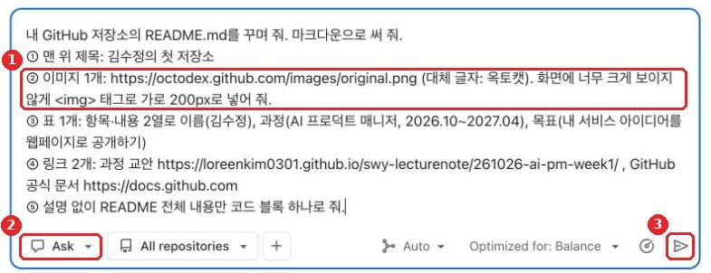
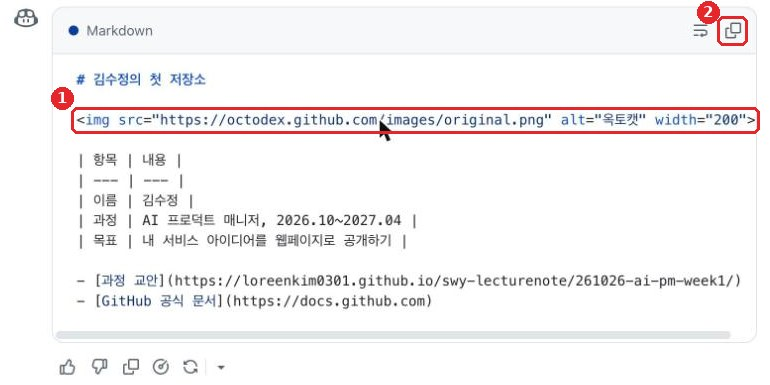
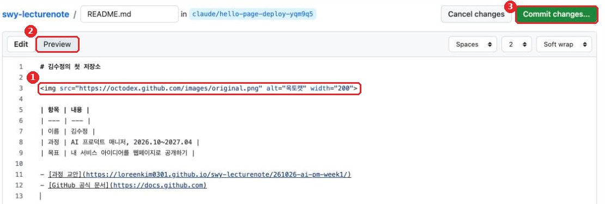
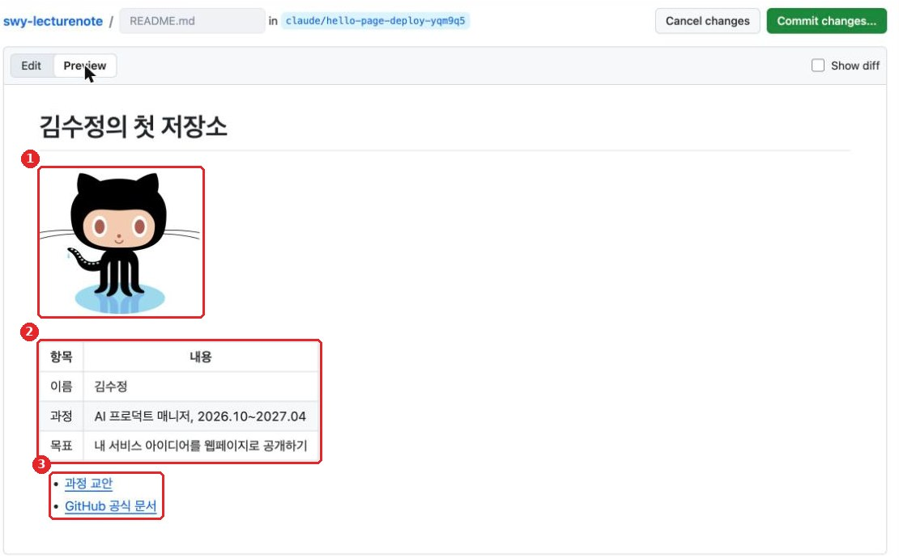
README를 Copilot으로 꾸미기: 이미지·표·링크로 main에 바로 커밋해요. 커밋 창에 Copilot이 영어 메시지를 미리 채워 넣으면 지우고 바꿔 적어요.| 쓰는 법 | 결과 |
|---|---|
 | 이미지. 맨 앞 !가 있으면 이미지, 없으면 링크예요. 대체 글자는 이미지가 안 보일 때 대신 나와요. |
<img src="이미지 주소" alt="대체 글자" width="200"> | 크기를 정한 이미지. 마크다운 로는 크기를 정할 수 없어서, 크기를 정할 때는 이 HTML 태그를 써요. width="200"은 가로 200px이라는 뜻이에요. 이번 실습에서 Copilot이 쓴 방식이에요. |
[보일 글자](주소) | 링크. 대괄호 글자가 화면에 보이고, 누르면 괄호 안 주소로 가요. |
| 항목 | 내용 || --- | --- || 이름 | 김수정 | | 표. 첫 줄이 제목 칸, 둘째 줄 ---는 "여기까지가 제목"이라는 구분선이에요. |
width="200"의 숫자만 바꿔요. 처음에는 150~300 사이에서 바꿔 보고, 숫자를 바꿀 때마다 [Preview]로 다시 확인해요. (GitHub README의 HTML 이미지 태그 참고: How to Resize Images in GitHub Markdown)실습 5. 올라간 파일의 이름 바꾸기
연습용 파일을 하나 만들고 이름을 바꿔 봐요. sale.html은 뒤의 실습에서 계속 쓰니 건드리지 않아요.
memo.txt, 아래 내용 칸에 연습용 메모를 적고 커밋 메시지 연습용 메모 추가로 커밋해요.memo.txt를 열고 연필 모양 버튼을 눌러요.memo.txt를 지우고 notes.md로 고쳐요. 내용은 그대로 둬요.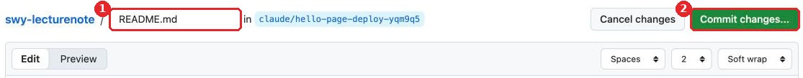
memo.txt 이름을 notes.md로 변경으로 커밋해요..md, .html 같은 확장자는 파일 종류를 알려 주니 함부로 바꾸지 않아요.실습 6. 올라간 파일 지우기
notes.md를 열어요.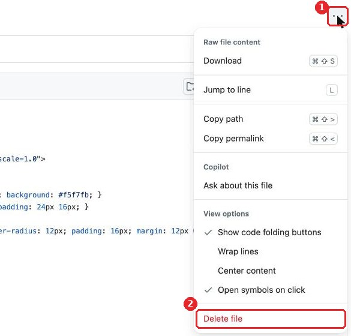
연습용 notes.md 삭제로 커밋해야 지워져요.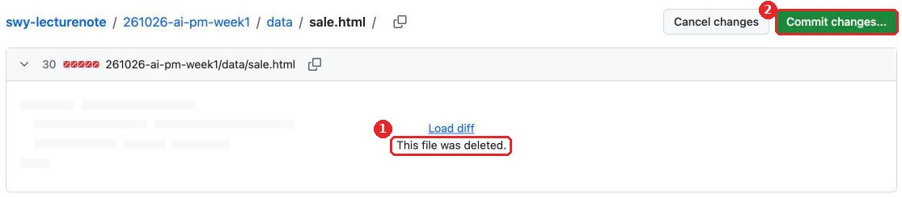
저장소 화면에서 키보드 마침표(.)를 누르면 브라우저 안에서 코드 편집기 github.dev가 열려요. 여러 파일을 고친 뒤 한 번에 커밋할 수 있고, GitHub.com에서 누구나 무료로 써요. 다만 컴퓨터 자원이 연결되어 있지 않아 코드를 실행하거나 터미널을 쓸 수는 없어요.
저장소를 내 컴퓨터로 가져오는 방법은 두 가지이고, 기록이 함께 오는지가 달라요.
| 방법 | 어떻게 | 기록(커밋)이 오나 | 언제 쓰나 |
|---|---|---|---|
| ZIP 내려받기 | 저장소 화면의 [Code] → [Download ZIP] | 오지 않아요. 지금 시점의 파일만 와요. | 결과물만 전달하거나 한번 살펴볼 때 |
| 클론(clone) | [Code]에 보이는 저장소 주소로 Git이나 AI 코딩 도구가 복사 | 모든 기록이 함께 와요. | 이어서 고치고 다시 올릴 때 (설치가 필요해 오늘은 뜻만) |
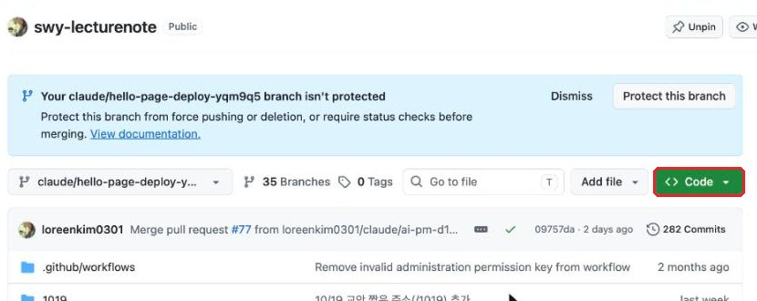
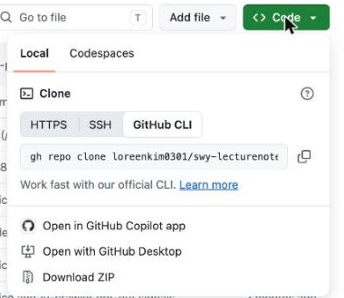
실습 7. ZIP으로 내려받아 비교하기
[Code] → [Download ZIP]으로 내려받아 압축을 풀고, 안에 있는 README.md를 메모장으로 열어 보세요. 실습 4에서 Copilot으로 꾸민 마크다운이 들어 있으면 성공이에요. 실습 6에서 지운 notes.md는 없어야 해요. 압축 파일 안에는 커밋 기록이 없다는 점도 확인해요.
요청: GitHub 저장소 [저장소 주소]를 작업 폴더로 클론해 줘. 내용: 클론이 끝나면 최근 커밋 5개의 메시지와 날짜를 보여 주고, 아직 아무 파일도 고치거나 추가하지 마. 확인하지 못한 항목은 [확인 필요]로 남겨. 형식: 폴더 위치, 최근 커밋 5개 목록, 현재 브랜치 이름.
커밋이 쌓이면 "언제 무엇이 바뀌었는지"를 줄 단위로 볼 수 있어요. AI가 정확히 무엇을 바꿨는지 확인하는 가장 확실한 방법이고, 기획자에게는 "이 요구사항은 언제, 누가, 왜 바꿨지?"라는 질문에 답해 주는 기록이에요.
실습 8. 커밋 하나 열어 보기
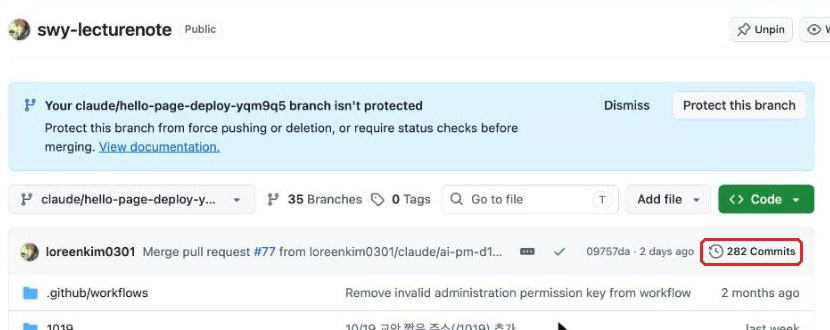
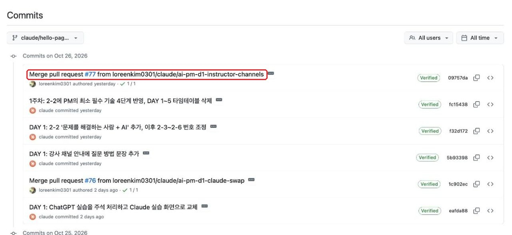
README를 Copilot으로 꾸미기 커밋을 찾아 열어요. 실습 3에서 쓴 내 소개가 빨강(예전) → Copilot이 꾸민 내용이 초록(새 내용)으로 보이는지 확인해요.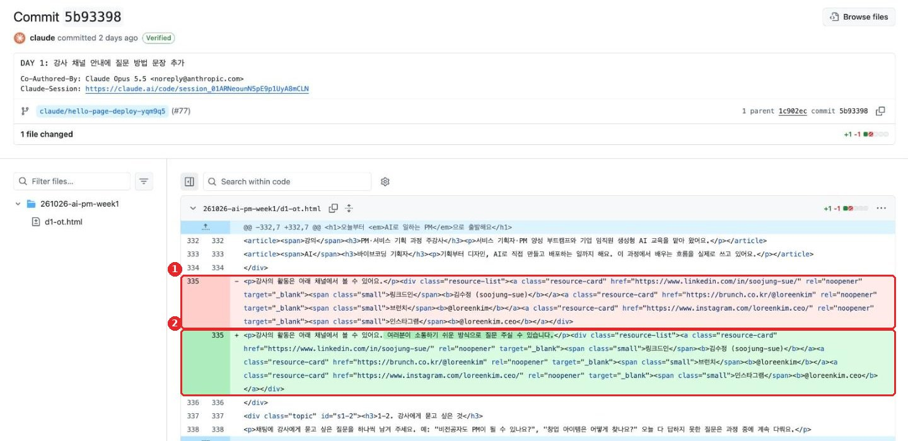
두 시점 비교하기: 주소창에 github.com/내아이디/my-first-site/compare를 입력하면 두 브랜치나 두 커밋 사이에 바뀐 내용을 한 번에 볼 수 있어요. 커밋 번호(앞 7자리)를 이전번호..이후번호 형식으로 주소 뒤에 붙여도 돼요.
파일 한 개의 기록: 파일을 연 화면에서 그 파일을 바꾼 커밋만 모아 볼 수 있고, [Blame]을 누르면 줄마다 마지막으로 바꾼 커밋과 사람이 표시돼요.
Git의 되돌리기는 과거를 지우는 것이 아니라, "되돌린다"는 새 커밋을 하나 더 쌓는 것이에요. 그래서 되돌린 기록까지 남고, 되돌린 것을 다시 되돌릴 수도 있어요. 상황에 따라 방법이 세 가지예요.
| 상황 | 방법 | 누가 |
|---|---|---|
| 병합된 PR 하나를 통째로 취소하고 싶을 때 | 그 PR 화면 아래의 [Revert] 버튼 → 되돌림 PR이 새로 만들어지고, 그것을 병합해야 실제로 반영돼요. | 쓰기 권한이 있는 사람 (웹에서 가능) |
| PR 없이 main에 바로 올린 커밋을 취소하고 싶을 때 | Git의 revert 명령. 공식 문서는 웹 화면에서 커밋 하나를 바로 되돌리는 버튼을 안내하지 않아요. AI 코딩 도구나 GitHub Desktop의 [Revert Changes in Commit]을 써요. | AI 코딩 도구 / GitHub Desktop |
| 파일 한 개의 문구만 예전으로 돌리고 싶을 때 | 커밋 기록에서 예전 내용을 확인하고, 편집 화면에서 그대로 고쳐 새 커밋으로 남겨요. | 웹에서 직접 |
실습 9. 제목을 바꿨다가 예전으로 돌리기
sale.html을 열고 연필 버튼을 눌러 이번 주 특가 3가지를 10월 마지막 주 특가 3가지로 바꾼 뒤, 커밋 메시지 특가 제목을 10월 마지막 주로 변경으로 커밋해요.sale.html 편집 화면에서 제목을 예전 문구 이번 주 특가 3가지로 다시 바꿔요.특가 제목 되돌림: 이번 주 특가 3가지로 커밋해요.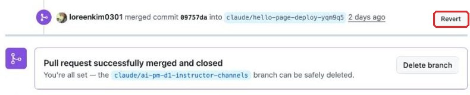
이번 주 특가 3가지로 돌아왔나요?"어디까지 돌아갈지"를 커밋으로 정확히 짚어 주고, 실행 전에 무엇이 바뀌는지 먼저 보여 달라고 해요.
요청: 커밋 [커밋 번호 7자리]에서 바꾼 내용을 git revert로 되돌려 줘. 내용: 실행 전에 그 커밋에서 바뀐 파일과 줄을 먼저 보여 주고 내 확인을 받아. 기록을 지우는 reset이나 강제 푸시(force push)는 쓰지 말고, 되돌림 말고 다른 수정은 추가하지 마. 판단이 안 되는 부분은 [확인 필요]로 남겨. 형식: 되돌림 전 변경 요약, 실행한 명령어, 새로 생긴 되돌림 커밋 메시지.
git reset --hard, git push --force는 기록 자체를 지우거나 덮어써요. 혼자 쓰는 저장소에서도 복구가 어려워지고, 함께 쓰는 저장소에서는 동료의 작업까지 사라질 수 있어요. 프롬프트에 "쓰지 마"를 넣고, 결과 화면에 이 명령이 보이면 멈추세요.3-6까지는 GitHub 웹 화면 안에서 바로 고쳤어요. 하지만 실제로 AI와 일할 때는 파일이 두 곳에 있어요. 이 두 곳을 구분하는 말이 원격과 로컬이에요.
GitHub에 있는 저장소예요. 모두가 함께 보는 공식 보관함이에요. 예: github.com/내아이디/my-first-site
원격 저장소를 복사해 와서 실제로 고치는 작업 공간이에요. 내 컴퓨터일 수도 있고, Claude가 일하는 클라우드 속 컴퓨터일 수도 있어요.
| 용어 | 뜻 | 업무로 비유하면 |
|---|---|---|
| 클론 (Clone) | 원격 저장소를 기록째 로컬로 처음 복사해 오는 것 | 공유 폴더를 통째로 내 컴퓨터에 받아 오기 |
| 커밋 (Commit) | 로컬에서 고친 내용을 메모와 함께 기록하는 것 | v02로 저장하고 변경 이력표에 한 줄 적기 |
| 푸시 (Push) | 로컬의 커밋을 원격으로 올리는 것 | 고친 파일을 공유 폴더에 올리기 |
| 풀 (Pull) | 원격의 최신 커밋을 로컬로 받아 오는 것 | 동료가 올린 최신본을 내 컴퓨터로 받기 |
| 브랜치 · PR · 병합 | 원본(main) 대신 갈래에 올리고, 합쳐 달라고 요청하고, 검토 뒤 합치는 것 | 사본으로 고쳐서 "검토 부탁드립니다" 보내고, 승인되면 원본에 반영 |
Claude Code 웹(claude.ai/code)은 Claude가 클라우드 속 컴퓨터에서 내 GitHub 저장소를 클론해 고치고, 새 브랜치로 푸시해 주는 기능이에요. 공식 문서에 따르면 Pro·Max·Team 플랜에서 쓸 수 있고, Claude 휴대폰 앱의 Code 탭에서도 열 수 있어요. 처음 한 번은 GitHub 연결이 필요해요.
STEP 1. 처음 한 번: GitHub 연결하기
my-first-site는 공개 저장소라 설치하지 않아도 돼요.STEP 2. 올리기: 헬로 페이지 만들기
my-first-site를 골라요. 검색 칸에 이름을 치면 빨리 찾아요.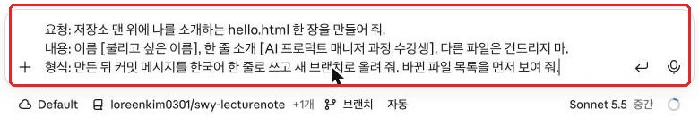
요청: 저장소 맨 위에 나를 소개하는 hello.html 한 장을 만들어 줘. 내용: 이름 [불리고 싶은 이름], 한 줄 소개 [AI 프로덕트 매니저 과정 수강생], 좋아하는 것 [ ]. 다른 파일은 건드리지 마. 형식: 바꾼 파일 목록을 먼저 보여 주고, 커밋 메시지는 무엇을 왜 바꿨는지 한국어 한 줄로 써서 새 브랜치로 올려 줘. 내가 주지 않은 경력이나 숫자는 넣지 말고, 모르면 [확인 필요]로 남겨.
STEP 3. 합치기: PR 만들고 병합하기
+42 -0)가 보여요. 눌러서 바뀐 내용을 확인해요.요청: 방금 올린 브랜치로 main에 합치는 PR을 만들어 줘. 내용: PR 제목은 "헬로 페이지 추가", 설명에는 바꾼 파일과 이유를 2줄로 써 줘. 형식: PR 주소를 알려 줘. 병합은 내가 GitHub에서 직접 할게.
STEP 4. 내리기: 합친 최신 내용으로 이어서 고치기
새 작업을 맡기면 Claude가 원격의 최신 main을 다시 받아 와서(클론·풀) 시작해요. 내가 직접 받을 필요가 없어요.
요청: main 브랜치의 최신 hello.html에서 한 줄 소개 문구만 [바꿀 문구]로 바꿔 줘. 내용: 시작하기 전에 지금 main의 최근 커밋 3개 메시지를 먼저 보여 줘. 다른 줄은 바꾸지 마. 형식: 바뀐 줄 전후를 보여 주고, 새 브랜치로 올린 뒤 PR까지 만들어 줘.
hello.html 하나만 있나요?hello.html이 보이나요?실습 채팅에 번호와 답만 남겨요.
| 번호 | 질문 |
|---|---|
| Q1 | Claude가 hello.html을 만든 곳은 원격일까요, 로컬일까요? |
| Q2 | Claude가 "새 브랜치로 올렸어요"라고 했다면, 어떤 동작을 한 걸까요? |
| Q3 | 다른 컴퓨터에서 Claude에게 이어서 고치라고 했을 때, 병합된 최신 내용은 어떻게 받아 오나요? |
| Q4 | PR을 병합하기 전에 PM이 꼭 보는 탭은? |
| 번호 | 정답 |
|---|---|
| Q1 | 로컬. Claude가 클라우드 속 작업 공간에 저장소를 클론해 와서 고쳤어요. |
| Q2 | 푸시. 로컬의 커밋을 원격(GitHub)의 새 브랜치로 올린 거예요. |
| Q3 | Claude가 원격의 최신 main을 클론·풀로 받아 와서 시작해요. 내가 따로 할 일은 없어요. |
| Q4 | [Files changed]. 내가 요청한 파일만, 요청한 만큼 바뀌었는지 확인해요. |
용어를 하나씩 외우기보다, 실제로 일이 흘러가는 장면 두 가지를 따라가요. 하나는 개발자와 함께 일하는 회사, 다른 하나는 혼자 AI와 만드는 1인 바이브코더예요.
상황 셀렉트마켓 PM인 나는 "특가 페이지의 쿠폰 버튼이 휴대폰에서 잘린다"는 고객 문의를 받았어요. 개발자 한 명과 함께 고쳐요.
| 순서 | 누가 | GitHub에서 하는 일 | PM이 보는 것 |
|---|---|---|---|
| 1 | PM | 이슈(Issue)를 만들어요. "무엇이, 어디서, 어떻게 잘못됐고, 어떻게 되어야 하는지"와 화면 캡처를 적어요. | 재현 방법과 기대 결과가 적혀 있나 |
| 2 | 개발자 | 원본(main)은 두고 브랜치를 만들어 고친 뒤, 이슈 번호를 적어 PR을 올려요. | PR 설명에 이슈 번호가 연결됐나 |
| 3 | PM | PR의 [Files changed]에서 바뀐 줄을 보고, 궁금한 줄에 줄 댓글을 달아요. 화면은 미리보기 주소로 확인해요. | 요청한 것만 바뀌었나, 다른 화면이 깨지지 않았나 |
| 4 | 개발자 → PM | 댓글을 반영해 커밋을 더 올리고, PM은 리뷰 승인(Approve)을 남겨요. | 의견이 모두 해결됐나 |
| 5 | 개발자 또는 PM | 병합(Merge)해요. 이슈는 자동으로 닫히고, 배포가 연결돼 있으면 사이트가 바뀌어요. | 실제 사이트에서 다시 확인 |
이 교안이 실제로 그렇게 만들어지고 있어요. 강사는 이 교안 저장소 loreenkim0301/swy-lecturenote에서 Claude에게 교안 수정을 말로 시키고, Claude가 올린 PR을 확인한 뒤 직접 병합해요. 병합하면 GitHub Pages로 교안 사이트가 자동으로 바뀌어요.
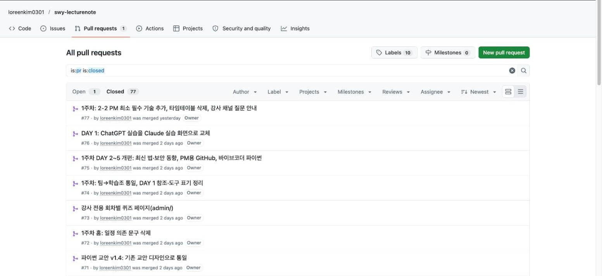
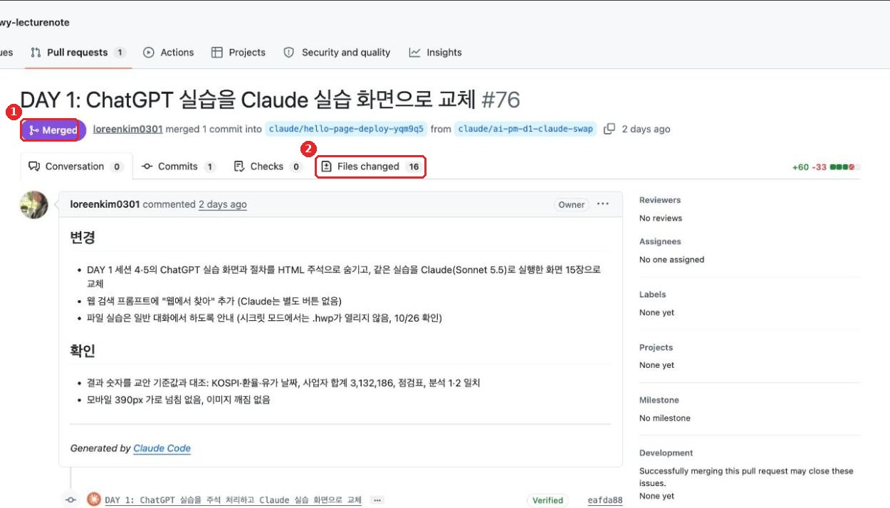
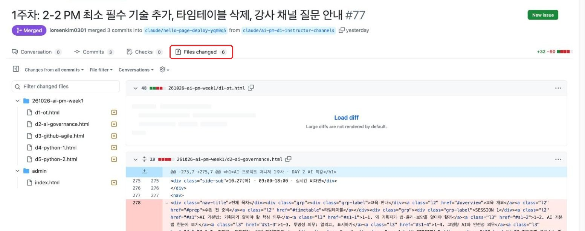
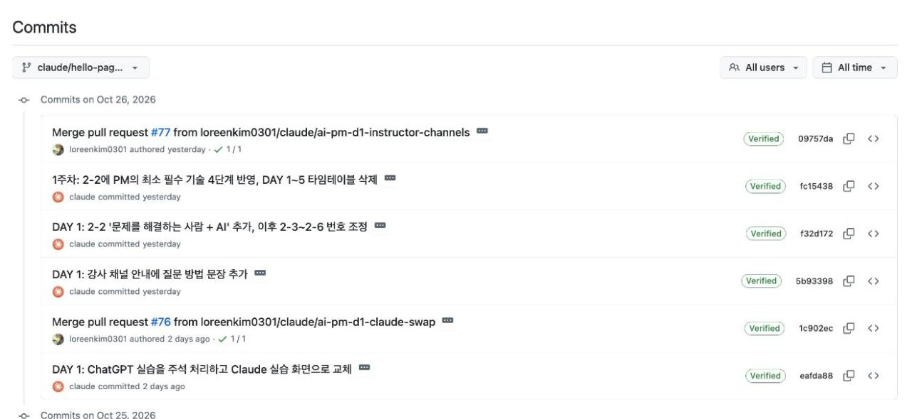
| 장면 | 강사가 한 일 | GitHub에 남은 것 |
|---|---|---|
| "DAY 1에 ChatGPT 대신 Claude 화면으로 바꿔 줘" | Claude에게 말로 요청 | 새 브랜치와 커밋, PR #76 |
| 병합 전 확인 | PR 설명과 [Files changed]를 읽음 | 바뀐 파일 목록과 줄 |
| 배포 | [Merge pull request] 클릭 | Merge 커밋, Pages 자동 배포 |
| 문제가 생기면 | 이전 커밋으로 되돌리거나 PR을 되돌림 | 되돌림 커밋(3-6) |
실습 채팅에 번호와 답만 남겨요.
| 번호 | 질문 |
|---|---|
| Q1 | 사례 A에서 PM이 개발자에게 수정을 요청할 때 가장 먼저 만드는 것은? |
| Q2 | 사례 B처럼 혼자 일하는데 왜 main에 바로 올리지 않고 PR을 거칠까요? |
| Q3 | PR 화면에서 "claude committed"와 "Merge pull request"는 각각 누가 한 일일까요? |
| 번호 | 정답 |
|---|---|
| Q1 | 이슈(Issue). 무엇이 어떻게 잘못됐고 어떻게 되어야 하는지 기록이 남는 곳에 적어요. |
| Q2 | 합치기 전에 AI가 바꾼 파일과 줄을 [Files changed]에서 확인하는 단계를 만들기 위해서예요. |
| Q3 | "claude committed"는 Claude가 올린 커밋, "Merge pull request"는 사람이 확인하고 합친 기록이에요. |
GitHub Pages는 GitHub 저장소에 있는 HTML 파일을 웹사이트로 보여 주는 GitHub의 기능이에요. 공식 문서에 따르면 GitHub Free 플랜에서도 Public 저장소라면 쓸 수 있어요. 오늘 저장소를 Public으로 만든 이유가 여기 있어요.
GitHub Pages는 주소로 들어왔을 때 가장 먼저 index.html을 찾아요. 3-8에서 만든 헬로 페이지로 이어지는 첫 화면을 Claude에게 만들어 달라고 해요.
요청: my-first-site 저장소 맨 위에 index.html을 만들어 줘. 내용: 제목은 "[내 이름]의 첫 페이지", 소개 2줄, hello.html과 sale.html로 가는 링크 2개. 휴대폰에서도 글자가 잘리지 않게 해 줘. 다른 파일은 건드리지 마. 형식: 새 브랜치로 올리고 PR을 만들어 줘. 내가 주지 않은 경력이나 숫자는 넣지 말고, 모르면 [확인 필요]로 남겨.
index.html 하나만 있는지 확인해요.index.html이 보이는지 확인해요.강사 시연 강사 화면으로 먼저 보고, 실습 같은 순서로 따라 해요.
my-first-site 저장소 이름 아래에 있는 [Settings]를 눌러요. [Settings]가 안 보이면 옆의 펼침 메뉴를 열고 [Settings]를 눌러요.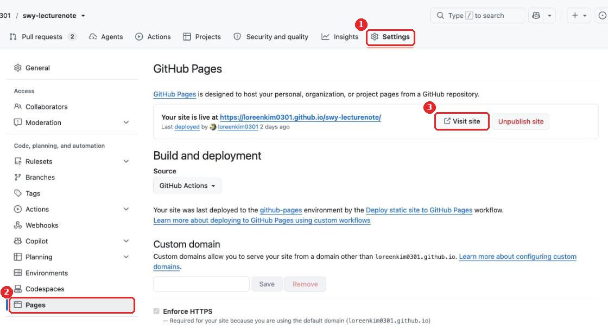
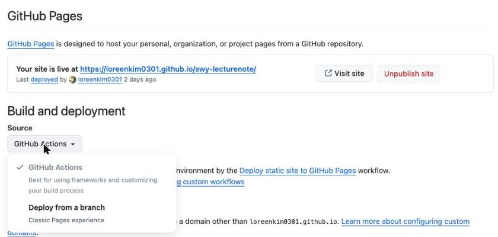
main을 고르고, 폴더 펼침 메뉴는 /(root)로 둬요. root는 저장소의 맨 위 칸이라는 뜻이에요.index.html, index.md, README.md 파일을 사이트의 첫 화면으로 찾고, 브랜치와 폴더에서 배포할 때는 이 파일이 고른 폴더의 맨 위에 있어야 해요. 우리는 /(root)를 골랐으니 index.html이 저장소 맨 위에 있어야 해요.https://[내 GitHub 아이디].github.io/my-first-site/
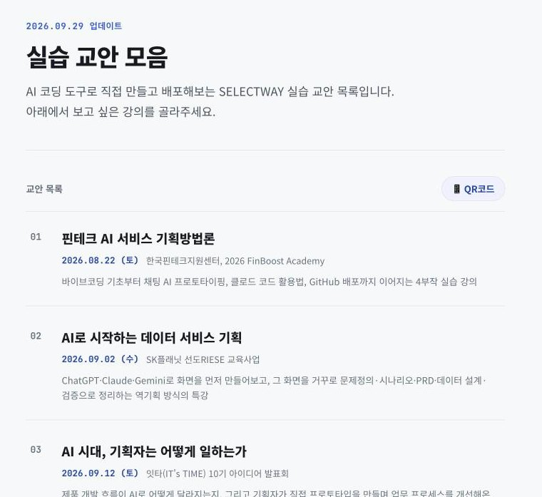
index.html이고 저장소 맨 위에 있나요? ③ [Pages] 설정이 main / /(root)로 저장되었나요? ④ 주소의 아이디와 저장소 이름 철자가 맞나요? 그래도 안 되면 채팅에 "막혔어요 5-3"과 내 주소를 남겨 주세요.공개한 뒤에 고치는 방법도 같아요. Claude에게 고치게 하고, PR을 확인해 병합하면 사이트가 다시 바뀌어요.
요청: index.html의 소개 2줄 중 첫 줄을 [바꿀 문구]로 바꿔 줘. 내용: 다른 줄과 다른 파일은 바꾸지 마. 형식: 바뀐 줄 전후를 보여 주고, 새 브랜치로 올린 뒤 PR을 만들어 줘.
https://아이디.github.io/my-first-site/ 주소로 내 페이지가 열리나요?file://이 아니라 https://로 시작하나요?이 세션은 선택이에요. 시간이 남거나 짝과 함께 해 보고 싶을 때 진행해요. 학습조 안에서 2명씩 짝을 지어요. 한 사람은 저장소 주인(PM 겸 리뷰어, Reviewer), 다른 사람은 협업자(개발 담당)를 맡아요. 인원이 홀수면 3명이 한 짝이 되어 리뷰어를 2명 둬요. 한 바퀴를 돌면 역할을 바꿔 짝의 저장소에서 한 번 더 해요.
두 사람이 같은 파일을 동시에 고쳐도 서로 덮어쓰지 않는 이유는, 각자 브랜치에서 작업하고 PR로 검토를 거쳐 main에 합치기 때문이에요.
| 역할 | A · 저장소 주인 (PM) | B · 협업자 (개발 담당) |
|---|---|---|
| 하는 일 | 이슈 작성, 협업자 초대, 리뷰, 병합 | 브랜치에서 수정, PR 작성, 리뷰 반영 |
| 사용 저장소 | A의 my-first-site (한 바퀴 뒤 B의 저장소로 바꿔서 반복) | |
무료 요금제에서도 공개·비공개 저장소 모두 협업자를 인원 제한 없이 초대할 수 있어요. 개인 계정 저장소의 협업자는 읽기와 쓰기(푸시) 권한을 함께 받아요.
실습 10. 짝 초대하고 수락하기
[요청] 특가 상품에 할인율 표시 추가이번에는 main에 바로 커밋하지 않고, 새 브랜치를 만들어 PR로 올려요.
실습 11. B가 할인율을 추가하고 PR 올리기
sale.html을 열고 연필 버튼을 눌러요.<p class="price">19,000원 (24% 할인)</p>로 바꿔요. (A가 가격을 바꿨다면 A의 가격 뒤에 (24% 할인)만 붙여요.)feature/discount-rate로 적고 [Propose changes]를 눌러요.closes #이슈번호를 적은 뒤 [Create pull request]를 눌러요.브랜치 이름 관례: 무엇을 하는 갈래인지 이름만 보고 알 수 있게 feature/기능, fix/버그처럼 앞에 종류를 붙이는 팀이 많아요. GitHub가 정한 규칙은 아니고 팀 약속이에요.
closes #번호가 있나요?실습 12. A가 리뷰하고, B가 반영하고, A가 병합하기
· 24% 할인으로 표기해 주세요"를 남기고 [Request changes]로 리뷰를 보내요.병합 방법 세 가지: [Merge pull request] 옆 화살표를 누르면 고를 수 있어요. 처음에는 기본값을 쓰고, 팀에서 하나로 정해 두면 돼요.
| 방법 | main에 남는 기록 |
|---|---|
| Create a merge commit | 브랜치의 커밋이 모두 남고, "합쳤다"는 병합 커밋이 하나 더 생겨요. |
| Squash and merge | 브랜치의 여러 커밋을 하나로 합쳐 한 커밋으로 남겨요. 기록이 깔끔해요. |
| Rebase and merge | 병합 커밋 없이 브랜치의 커밋을 main 끝에 차례로 이어 붙여요. |
충돌은 실수가 아니라, Git이 "두 사람이 같은 줄을 다르게 고쳤는데 어느 쪽으로 할지 사람이 정해 주세요"라고 묻는 상황이에요. 시간이 남는 짝은 아래를 펼쳐 직접 겪어 봐요.
fix/title-a, fix/title-b)에서 sale.html의 <h1> 제목을 서로 다른 문구로 바꾸고 PR을 하나씩 만들어요. (A: 주말 한정 특가, B: 이번 주만 특가)<<<<<<< fix/title-b <h1>이번 주만 특가</h1> ======= <h1>주말 한정 특가</h1> >>>>>>> main
위쪽(<<<<<<< 부터 ======= 까지)은 내 브랜치 내용, 아래쪽(======= 부터 >>>>>>> 까지)은 합치려는 쪽 내용이에요. 표시 줄 세 개(<<<, ===, >>>)는 반드시 지워야 해요.
두 명만 되어도 약속이 없으면 금방 엉켜요. 짝과 아래 규칙 초안을 정해 README에 적어 커밋해 보세요.
## 협업 규칙 - main에는 직접 커밋하지 않고, 브랜치를 만들어 PR로 올린다. - 브랜치 이름: feature/기능, fix/버그 - PR 설명 첫 줄에 해결하는 이슈 번호를 적는다. (예: closes #3) - PR은 작성자가 아닌 사람 1명 이상이 승인해야 병합한다. - 병합 방법: [팀에서 정한 방법] - 충돌이 나면 혼자 정하지 않고 상대에게 확인한다.
이 규칙 중 "main 직접 커밋 금지"와 "승인 1명 이상"은 약속에만 맡기지 않고 GitHub 설정(브랜치 보호 규칙)으로 강제할 수 있어요. 6-5에서 뜻을 알아 둬요.
프로젝트 보드: 이슈와 PR을 칸반(Kanban) 보드처럼 모아 볼 수 있어요. 내 프로필의 [Projects] → [New project]에서 표(Table), 보드(Board), 로드맵(Roadmap) 중 하나를 골라 [Create project]를 누르고, 오늘 만든 이슈를 추가해 "할 일 → 진행 중 → 완료"로 옮겨 보세요. 스크럼의 스프린트 백로그(Sprint Backlog)를 관리하는 데 쓸 수 있어요.
실제 사용자가 쓰는 서비스가 되면 "고치는 곳"과 "사용자가 보는 곳"을 나눠야 해요. 실험 중인 기능, 아직 리뷰하지 않은 문구, AI가 잘못 바꾼 코드가 그대로 사용자에게 보이면 안 되기 때문이에요. 오늘은 PM이 개발팀과 출시 방식을 정할 때 쓰는 말의 뜻만 알아 둬요.
| 장치 | 한 줄 풀이 |
|---|---|
| 환경 나누기 | 로컬(작업하는 나) → 미리보기·스테이징(팀·PM·QA 확인) → 운영(실제 사용자)으로 나눠, 검증을 마친 것만 공개해요. |
| 브랜치 전략 | main을 운영으로 두고 기능 브랜치를 PR로 합치거나, main·develop·기능 브랜치로 한 단계 더 나눠요. |
| 브랜치 보호 규칙 | "main 직접 커밋 금지", "승인 1명 이상"을 설정으로 강제해요. 무료 요금제에서는 공개 저장소에서만 쓸 수 있어요. |
| 배포 연결 | main이 바뀌면 웹사이트가 따라 바뀌게 연결해요. my-first-site도 나중에 GitHub Pages로 이렇게 공개해요. |
| 릴리스와 롤백(Rollback) | 출시 시점마다 버전 이름표(v1.0.0)를 달고, 문제가 생기면 원인 PR을 [Revert]로 되돌려요. |
| 비밀 정보 관리 | API 키 같은 값은 저장소 밖(Secrets, 배포 서비스 환경 변수)에 두고, .gitignore로 커밋되지 않게 막아요. |
개발과 운영은 왜 나누나
| 환경 | 누가 보나 | 목적 |
|---|---|---|
| 로컬 (Local) | 작업하는 나, AI 코딩 도구 | 고치고 바로 확인 |
| 미리보기·스테이징 (Preview / Staging) | 팀, PM, QA(품질 확인) 담당자, 고객사 담당자 | 운영과 비슷한 곳에서 확인·테스트 |
| 운영 (Production) | 실제 사용자 | 검증을 마친 것만 공개 |
Vercel 같은 배포 서비스는 기본으로 이 세 가지 환경(Local, Preview, Production)을 나눠 제공하고, GitHub의 브랜치와 연결해 운영 브랜치(보통 main)는 운영으로, 다른 브랜치와 PR은 미리보기로 배포해요.
브랜치 전략 두 가지
main = 운영. 모든 작업은 feature/… 브랜치에서 하고 PR로 main에 합쳐요. PR마다 미리보기 주소로 확인해요.
소규모 팀, 자주 내보내는 웹 서비스, 바이브코딩 프로젝트에 맞아요.
main = 운영, develop = 개발 통합. 기능은 develop에 먼저 모아 스테이징(Staging) 환경에서 확인한 뒤, 출시할 때 develop → main으로 합쳐요.
출시 일정이 정해져 있거나, 고객사 검수를 거쳐야 하는 프로젝트에 맞아요.
위 흐름은 B 전략 예시예요. A 전략은 2~3단계 없이 PR 미리보기에서 확인하고 바로 main으로 합쳐요.
closes #번호는 기본 브랜치(main)로 병합될 때만 동작해요. develop으로 병합하는 PR에서는 이슈가 닫히지 않으니, 출시 PR(develop → main)에 해결한 이슈 번호를 모아 적거나 직접 닫아요.운영 브랜치 지키기 (강사 시연)
[Settings] → Code, planning, and automation 영역의 [Branches] → [Add classic branch protection rule]에서 Branch name pattern에 main을 적고, [Require a pull request before merging]과 그 아래 [Require approvals]를 켜면 승인 없이는 main에 합칠 수 없어요. 같은 일을 더 세밀하게 하는 룰셋(Rulesets)도 있고, 무료 요금제에서는 이것도 공개 저장소에서만 쓸 수 있어요.
배포와 미리보기 환경
GitHub Pages는 저장소 하나에서 운영 사이트 하나를 공개하는 구조라서, PR마다 미리보기 주소를 따로 만들지는 않아요. PR별 미리보기가 필요하면 Vercel처럼 미리보기 배포를 제공하는 서비스를 GitHub에 연결해요. Vercel은 운영 브랜치가 아닌 브랜치에 커밋하거나 PR을 만들면 미리보기 배포를 만들고, 그 주소를 PR 댓글 등으로 보여 줘요. 무료 요금제의 GitHub Pages는 공개 저장소에서만 쓸 수 있어요.
GitHub의 Environments: 저장소 [Settings] → [Environments]에서 staging, production 같은 배포 환경을 만들고, 운영 배포 전에 지정한 사람의 승인(Required reviewers)을 받게 할 수 있어요. 무료 요금제에서는 공개 저장소에서만 설정할 수 있어요. 자동 배포(GitHub Actions)와 함께 쓰는 기능이라 오늘은 개념만 알아 둬요.
릴리스와 롤백(Rollback)
운영에 내보낸 시점마다 이름표를 달아 두면, "v1.1 출시 뒤로 문의가 늘었다" 같은 이야기를 정확한 기록과 함께 할 수 있어요. 저장소 오른쪽 [Releases] → [Draft a new release]에서 [Choose a tag]에 v1.0.0을 적고, [Generate release notes]로 병합된 PR 목록을 채운 뒤 [Publish release]를 눌러요.
버전 번호 관례: v주.부.수(예: v1.0.0 → 기능 추가는 v1.1.0, 작은 수정은 v1.0.1) 형식을 많이 써요. GitHub가 강제하는 규칙은 아니고 널리 쓰이는 관례(시맨틱 버저닝, Semantic Versioning)예요.
롤백(Rollback): 출시 뒤 문제가 생기면, 원인이 된 PR을 3-6의 [Revert]로 되돌리고 병합해요. main이 바뀌면 배포도 따라 바뀌어요. 원인 파악은 그 다음에 해요. 되돌림 PR도 기록으로 남아요.
비밀 정보 관리
상용 서비스에는 API 키, 결제 키, 데이터베이스 주소 같은 비밀 정보가 들어가요. 이것이 저장소에 올라가면 공개 저장소에서는 누구나 볼 수 있고, 지운 뒤에도 커밋 기록에 남아요.
| 장치 | 무엇을 하나 |
|---|---|
| .gitignore | 커밋하지 않을 파일 목록. 비밀 정보를 담은 설정 파일(예: .env)을 여기에 적어 Git이 아예 기록하지 않게 해요. 저장소를 만들 때 함께 만들 수 있어요. |
| Secrets | [Settings] → Security 영역의 [Secrets and variables] → [Actions]에 비밀 값을 저장하고, 자동 배포(GitHub Actions)에서 이름으로만 불러 써요. 값은 화면에 다시 보이지 않아요. |
| Push protection | 비밀 정보로 보이는 값이 담긴 푸시를 막아 줘요. 사용자 단위 보호는 공개 저장소에 대해 기본으로 켜져 있어요. |
요청: 이 저장소에 비밀 정보가 커밋되어 있는지 점검해 줘. 내용: API 키, 토큰, 비밀번호, .env 파일이 현재 파일과 커밋 기록에 있는지 찾아. 찾은 값 자체는 화면에 다시 출력하지 말고 파일 이름과 줄 번호만 알려 줘. .gitignore에 .env가 들어 있는지도 확인해. 아무것도 고치거나 지우거나 추가하지 말고, 판단이 어려운 항목은 [확인 필요]로 남겨. 형식: ① 발견 목록(파일·줄·종류) ② .gitignore 확인 결과 ③ 내가 해야 할 조치
출시 전 PM 체크리스트
개발팀이나 외주사와 출시를 이야기할 때 아래 질문으로 구조를 확인해요. 답이 "없어요"라면 그것이 출시 전에 정해야 할 일이에요.
지금까지 "기록하고 함께 고치는 도구"를 배웠다면, 이제 팀이 어떤 순서와 약속으로 제품을 만드는지를 개론으로 배워요. 팀이 무언가를 만들 때 일하는 순서와 약속을 정한 것을 개발 방법론이라고 해요.
회사와 방법론마다 이름은 조금씩 다르지만, 제품은 대체로 아래 순서를 거쳐 만들어지고 다시 처음으로 돌아가요. 이 과정에서는 이 일곱 단계를 기준으로 이야기해요.
| 단계 | 무엇을 하나요 | PM이 주로 남기는 것 | 오늘 배운 것과 연결 |
|---|---|---|---|
| ① 문제 발견 | 사용자를 관찰하고 이야기를 들어 "진짜 불편"을 찾아요. | 인터뷰 메모, 페르소나 | 8-1 디자인 씽킹 |
| ② 기획 | 무엇을 왜 만들지, 무엇부터 할지 정해요. | 요구사항 정의서, PRD, 백로그, 로드맵 | 8-2 PM 기초 용어 |
| ③ 디자인 | 화면 구성과 사용 흐름을 그려요. | 화면 설계서, 시안 검토 의견 | 요구사항의 "확인 방법" |
| ④ 개발 | 설계대로 만들어요. AI가 함께 만들기도 해요. | 이슈, PR 리뷰 의견 | 세션 4, 세션 6 |
| ⑤ 테스트 | 요구사항대로 되는지, 오류는 없는지 확인해요. | 버그 이슈, 확인 결과 | 4-1 버그 이슈 |
| ⑥ 출시 | 사용자에게 공개해요. 문제가 생기면 되돌릴 준비도 해요. | 릴리스 노트, 출시 체크리스트 | 6-5 릴리스와 롤백 |
| ⑦ 측정·개선 | 사용자가 실제로 쓰는지 숫자로 보고, 다음에 고칠 것을 정해요. | KPI 결과, 다음 백로그 | 다시 ①로 |
폭포수(Waterfall)는 물이 위에서 아래로만 흐르듯 단계를 차례대로 한 번씩 끝내며 진행하는 방식이에요. 애자일(Agile)은 짧은 주기로 조금씩 만들어 보여 주고, 반응을 보며 계속 고치는 방식이에요.
위는 폭포수 방식의 흐름이에요. 애자일은 이 흐름을 작게 여러 번 반복한다고 생각하면 쉬워요.
| 비교 항목 | 폭포수 (Waterfall) | 애자일 (Agile) |
|---|---|---|
| 진행 방식 | 단계를 순서대로 한 번씩 | 짧은 주기를 여러 번 반복 |
| 요구사항 | 처음에 최대한 확정 | 진행하면서 바뀌는 것을 전제로 계속 다듬음 |
| 결과물을 보는 시점 | 마지막에 한 번 | 주기마다 동작하는 결과를 봄 |
| 장점 | 일정·비용 계획을 세우기 쉽고, 문서가 잘 남음 | 변화에 빨리 대응하고, 사용자 반응을 일찍 확인함 |
| 단점 | 뒤늦게 문제를 발견하면 되돌리기 어려움 | 전체 일정·범위를 처음에 딱 정하기 어려움 |
| 잘 맞는 경우 | 요구사항이 분명하고 잘 바뀌지 않는 일 | 사용자 반응을 보며 찾아가야 하는 새 서비스 |
실습 채팅에 답해 보세요. "셀렉트마켓의 고객 문의 응대 개선은 폭포수와 애자일 중 어느 쪽이 더 잘 맞을까요? 이유 한 줄."
애자일 소프트웨어 개발 선언(Agile Manifesto)에는 네 가지 가치가 적혀 있어요. 아래는 공식 사이트의 한국어 번역이에요.
| 한국어 공식 번역 | 영어 원문 |
|---|---|
| 공정과 도구보다 개인과 상호작용을 | Individuals and interactions over processes and tools |
| 포괄적인 문서보다 작동하는 소프트웨어를 | Working software over comprehensive documentation |
| 계약 협상보다 고객과의 협력을 | Customer collaboration over contract negotiation |
| 계획을 따르기보다 변화에 대응하기를 | Responding to change over following a plan |
스크럼(Scrum)은 애자일 방식으로 일하기 위한 대표적인 틀(프레임워크)이에요. 공식 문서인 스크럼 가이드(Scrum Guide) 2020을 기준으로 배워요. 스크럼 팀은 보통 10명 이하이고, 스크럼 마스터 1명, 프로덕트 오너 1명, 개발자들로 이루어져요.
팀이 만드는 제품의 가치를 최대화하는 책임을 져요. 프로덕트 백로그의 내용과 순서를 관리해요. 위원회가 아니라 한 사람이에요.
스크럼 가이드대로 스크럼이 자리 잡게 하고, 팀이 더 효과적으로 일하도록 돕는 책임을 져요.
스프린트마다 쓸 수 있는 결과물(증가분)을 만들어요. 스프린트 계획을 세우고, 매일 계획을 조정해요.
스프린트(Sprint)는 한 달 이하의 고정된 기간이에요. 스크럼의 다른 모든 이벤트는 스프린트 안에서 일어나요.
시간 상한은 한 달 스프린트 기준이에요.
| 산출물 | 한 줄 풀이 | 함께 정하는 약속 |
|---|---|---|
| 프로덕트 백로그 (Product Backlog) | 제품을 좋게 만들기 위해 필요한 일의 목록. 순서가 매겨져 있고 계속 바뀌어요. | 프로덕트 목표 (Product Goal) |
| 스프린트 백로그 (Sprint Backlog) | 이번 스프린트의 목표, 고른 백로그 항목, 그것을 해낼 계획. 개발자들이 만들고 써요. | 스프린트 목표 (Sprint Goal) |
| 증가분 (Increment) | 프로덕트 목표를 향한 구체적인 디딤돌. 스프린트마다 쓸 수 있는 결과물이에요. | 완료의 정의 (Definition of Done) |
실습 셀렉트마켓 팀이 "고객 문의 응대 개선"을 2주 스프린트로 진행한다고 상상해요. 학습조별로 프로덕트 백로그 항목 3개를 채팅에 적어 보세요. 예: "고객이 주문번호로 배송 상태를 직접 확인할 수 있다"
스크럼이 "어떻게 일할지"의 틀이라면, 디자인 씽킹은 "무엇을 만들지"를 찾는 문제 해결 방법이에요. 사용자를 깊이 이해하는 데서 출발해요. PM이 매일 쓰는 기초 용어도 함께 정리해요.
스탠퍼드 대학교 d.school은 디자인 씽킹을 이루는 다섯 가지 단계(mode)를 공감(Empathize), 정의(Define), 아이디어(Ideate), 프로토타입(Prototype), 테스트(Test)로 소개해요. 이 수업에서는 각 단계를 아래처럼 이해해요.
| 단계 | 셀렉트마켓 예시 | PM이 만드는 것 |
|---|---|---|
| 공감 | 상담 직원과 고객에게 문의할 때 어떤 점이 불편한지 들어요. | 인터뷰 메모 |
| 정의 | "고객은 배송 상태를 알기 위해 전화를 기다려야 한다"처럼 문제를 정해요. | 페르소나, 문제 문장 |
| 아이디어 | 자주 묻는 질문 페이지, 주문 조회 화면, 자동 답변 등 여러 방법을 떠올려요. | 요구사항 정의서 초안 |
| 프로토타입 | 핵심 화면 하나를 간단한 웹페이지로 만들어요. | MVP, 첫 화면 |
| 테스트 | 실제 사용자에게 보여 주고 반응을 기록해요. | 테스트 기록, 다음 백로그 |
PM이 회의와 문서에서 가장 자주 쓰는 말이에요. 회사마다 쓰임이 조금씩 다르니, 이 과정에서는 아래 뜻으로 써요. 공식 정의가 있는 용어는 출처를 함께 달았어요.
| 용어 | 이 과정에서는 이렇게 써요 | 예시 (셀렉트마켓) |
|---|---|---|
| 요구사항 정의서 | 서비스가 무엇을 해야 하는지 "누가 무엇을 할 수 있다"로 모은 문서. 만드는 사람들이 같은 것을 만들도록 맞추는 약속이에요. | "주문 조회" 요구사항 목록 |
| PRD (Product Requirements Document) | 제품 요구사항 문서. 왜 만드는지(문제·목표), 누구를 위한 것인지, 무엇을 만들지(요구사항), 어떻게 성공을 판단할지(지표)를 한곳에 모은 기획 문서예요. 요구사항 정의서보다 범위가 넓어요. | "주문 조회 개선" PRD |
| MVP (Minimum Viable Product) | 최소 기능 제품. 고객에 대해 검증된 배움을 가장 많이 얻을 수 있게 해 주는 새 제품의 버전이에요. "작게 만들어 빨리 확인하기"의 출발점이에요. | 주문번호 입력 → 배송 단계만 보여 주는 화면 하나 |
| 백로그 (Backlog) | 앞으로 할 일의 목록. 순서(우선순위)가 매겨져 있고 계속 바뀌어요. 스크럼의 프로덕트 백로그와 같은 뜻이에요. | GitHub 이슈 목록 |
| 유저 스토리 (User Story) | 팀이 할 일을 기능 단위의 작은 조각으로 나눈 것. 문서 자체보다 팀이 나누는 대화의 출발점이에요. 이 과정에서는 "[누구]로서, [무엇]을 하고 싶다. [왜] 하기 위해서" 틀로 써요. | "밤에 쇼핑하는 고객으로서, 배송 상태를 바로 보고 싶다. 전화를 기다리지 않기 위해서" |
| 인수 조건 (Acceptance Criteria) | 그 요구사항이 "다 됐다"고 판단하는 기준. 요구사항 정의서의 "확인 방법" 칸이에요. | 주문번호를 넣으면 배송 단계가 화면에 보인다 |
| 우선순위 | 무엇부터 할지의 순서. 이 과정에서는 필수·권장·선택 세 단계로 나눠요. | 필수는 3개 이하 |
| KPI (Key Performance Indicator) | 핵심 성과 지표. 목표에 가까워지고 있는지 보여 주는 숫자예요. 측정 방법과 기간을 함께 정해요. | 배송 문의 전화 건수, 주문 조회 화면 이용 건수 (목표 숫자는 근거가 있을 때만 적어요) |
| 로드맵 (Roadmap) | 제품을 어떤 순서로 키워 갈지 시간 흐름으로 보여 주는 계획표. 날짜보다 "지금·다음·나중" 순서로 그리기도 해요. | 지금: 주문 조회 / 다음: 자주 묻는 질문 / 나중: 자동 답변 |
| 스테이크홀더 (Stakeholder, 이해관계자) | 제품 결과에 영향을 주거나 받는 사람과 조직. PM은 이들의 의견을 모으고 조율해요. | 고객, 상담 직원, 물류 담당, 경영진 |
| 릴리스 (Release, 출시) | 만든 결과를 사용자에게 내보내는 일, 또는 내보낸 그 버전. GitHub에서는 특정 커밋에 버전 이름표를 달아 공개하는 기능이에요. | v1.0.0 주문 조회 첫 공개 |
index.html은 GitHub Pages로 누구나 여는 주소가 돼요. 공개되니 개인정보는 넣지 않아요.과제
https://내아이디.github.io/my-first-site/)를 휴대폰으로 열어 보고, 성장 로드맵 메모에 적어 두세요.hello.html이나 index.html을 한 번 더 고치게 하고, PR의 [Files changed]를 확인한 뒤 병합해 보세요.오늘 만든 저장소와 Pages 주소를 메모해 두세요. 앞으로 만드는 결과물이 이 저장소에 쌓여요.